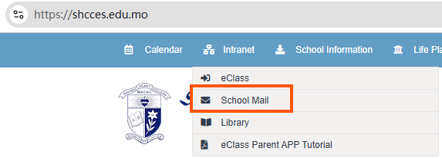
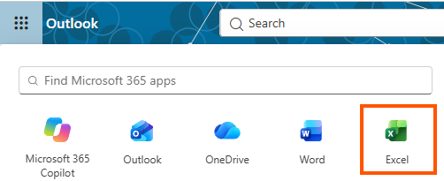
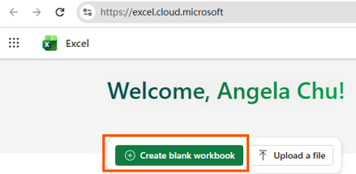
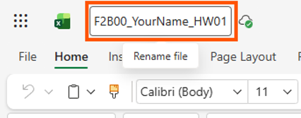
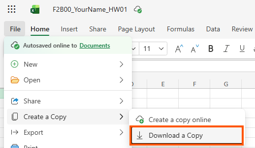

Guide 01
Getting Started with Microsoft 365 Excel
Follow this guide to sign in to Microsoft 365 at school, open Excel Online, create a blank workbook, rename the file with your own name, and download a copy to your computer. Work through the four steps in order.
Step 01
Access Microsoft 365 Excel
Excel Online lives inside your school Microsoft 365 account. You reach it through the school website and your school mailbox.
1.1 Open the school website
- Open your browser and go to https://shcces.edu.mo.
- Click the Intranet menu at the top of the page.
- From the drop-down list, click School Mail. （點選「School Mail」進入學校電郵）

1.2 Open the app launcher in Outlook
- Sign in with your school email address and password if you are asked to.
- Outlook opens. Look at the top-left corner of the page for the app launcher — a small grid of nine dots （九點方格）.
- Click the grid to open the Microsoft 365 apps list.
- You can type in the “Find Microsoft 365 apps” search box to narrow the list.
- Click Excel.

Step 02
Create a Blank Workbook
A new Excel file is called a workbook （活頁簿）. Inside it are worksheets （工作表）.
How to create it
- On the Excel home screen, find the green button “Create blank workbook”.
- Click it once.
- Excel opens a brand-new workbook with one sheet, usually named Sheet1.

What you should see
- A Title Bar at the top showing the file name.
- The Ribbon with tabs: File, Home, Insert, Draw, View …
- A grid of columns (A, B, C …) and rows (1, 2, 3 …).
- A Sheet tab at the bottom-left labelled Sheet1.
Step 03
Rename the File
Your teacher needs to know the file is yours. Rename it using the class naming rule before you start typing any data.
Naming rule
- F2B00 — your class and your classnumber.
- YourName — your own English name (no spaces).
- HW01 — the homework number.
How to rename it
- Look at the top-left corner of the Excel window, next to the green Excel icon.
- Click once on the current file name (for example Book1 or Untitled spreadsheet).
- The name becomes editable and a tooltip says “Rename file”.
- Delete the old name and type your new name, for example F2B00_YourName_HW01.
- Press Enter to confirm.

Step 04
Download a Copy
Excel Online saves your work in the cloud. To keep a copy on your own computer or to hand it in, you must download it.
How to download
- Click the File tab on the ribbon (top-left).
- In the left-hand menu, hover over Create a Copy.
- A sub-menu appears. Click Download a Copy.
- Your browser saves the file, usually into the Downloads folder.

Quick Check
Did You Complete All Four Steps?
| ✔ | Task |
|---|---|
| ☐ | I signed in through shcces.edu.mo → Intranet → School Mail. |
| ☐ | I opened the app launcher in Outlook and clicked Excel. |
| ☐ | I clicked Create blank workbook and a new sheet appeared. |
| ☐ | I renamed the file using the pattern F2B00_YourName_HW01. |
| ☐ | I used File → Create a Copy → Download a Copy to save it. |